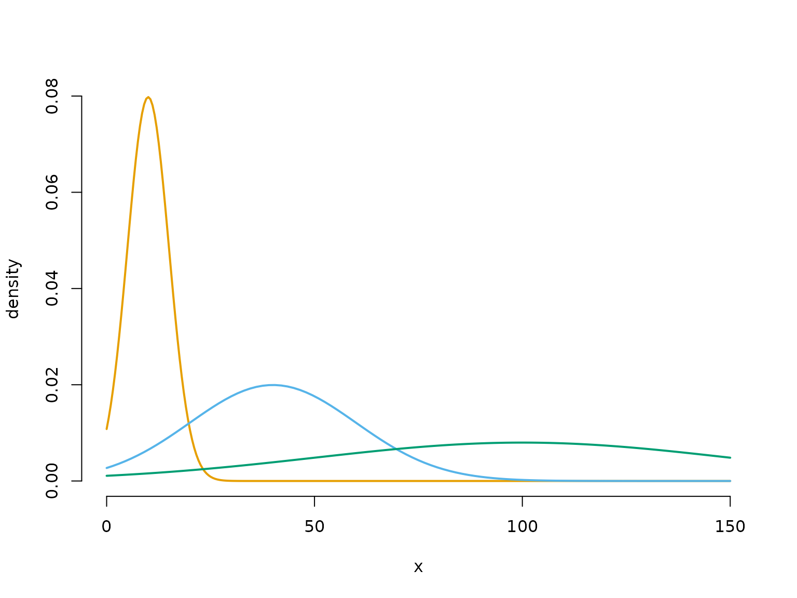
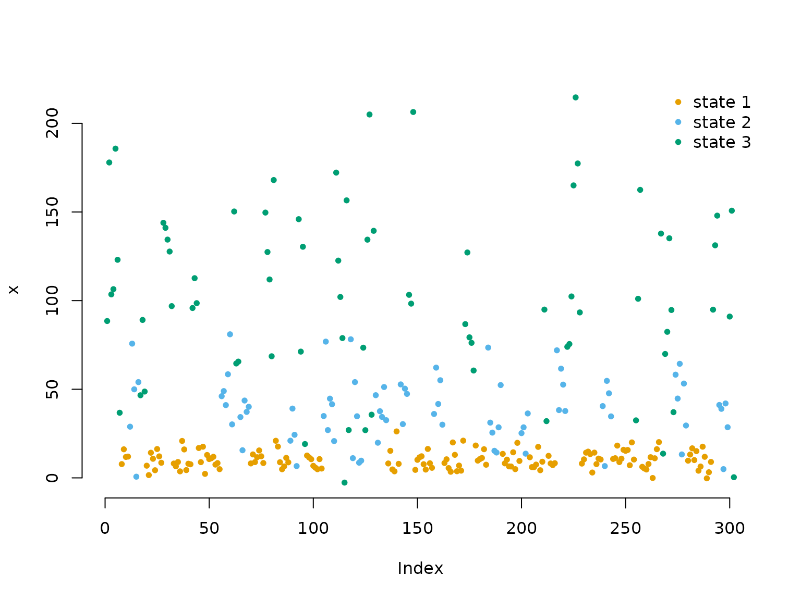
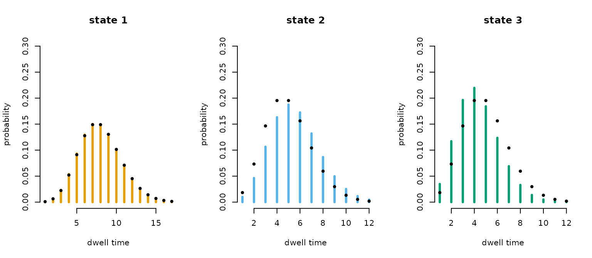
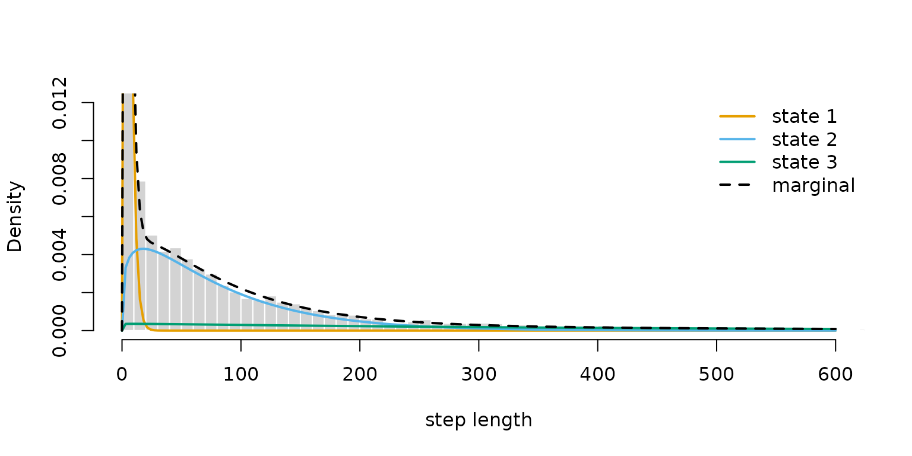
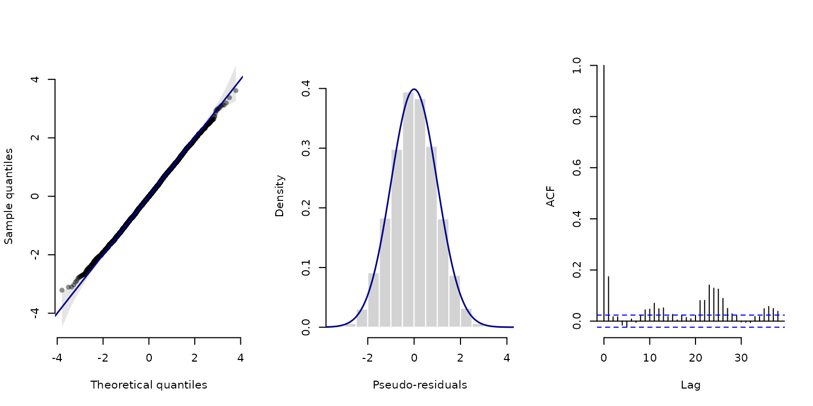
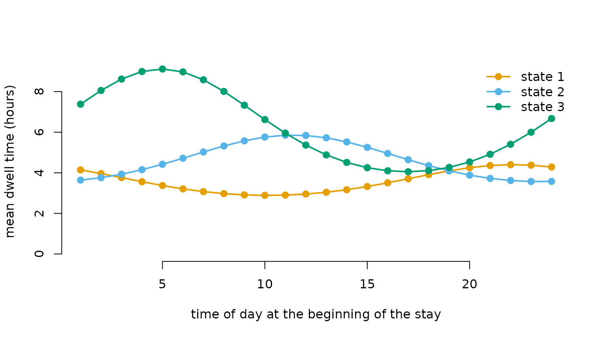

8 Hidden semi-Markov models
Jan-Ole Fischer
HSMMs.RmdBefore diving into this vignette, we recommend reading the vignette Introduction to LaMa.
In a homogeneous HMM, the time spent in a state before it is left, the dwell time, is necessarily geometrically distributed. By the Markov assumption, the chain decides anew at each time point whether to leave state i, in a Bernoulli trial with success probability 1 - \gamma_{ii} that does not depend on how long it has been there. The probability that a stay in state i lasts exactly r time points is therefore d_i(r) = \gamma_{ii}^{r-1} (1 - \gamma_{ii}), \quad r = 1, 2, \dots, the probability of r - 1 failures followed by a success. This is often unrealistic, e.g. when an animal tends to rest for a few hours rather than for one. Hidden semi-Markov models (HSMMs) relax this assumption by allowing any distribution on the positive integers for the dwell time of each state. Inference becomes more involved, but Langrock and Zucchini (2011) showed that HSMMs can be estimated conveniently by approximating them by HMMs with an extended state space, so that the (approximate) likelihood can again be evaluated by the forward algorithm and maximised numerically.
Hidden semi-Markov models
The state process of an N-state HSMM is specified by two ingredients:
- a dwell-time distribution d_i(r), r = 1, 2, \dots, for each state i, now any distribution on the positive integers, and
- the conditional transition probabilities \omega_{ij}, the probability of switching to state j, given that state i is left. They form the matrix \boldsymbol{\Omega}, whose diagonal is zero, as a state cannot be re-entered when it is left.
In the approximating HMM, each state i of the HSMM is represented by an aggregate of N_i states: being in its r-th state means being at the r-th time point of the current stay. From there, the chain either moves one state up, or leaves the aggregate with the probability that the stay ends now, given that it has lasted r time points. The highest state of an aggregate holds all longer stays, so beyond N_i the dwell times have a geometric tail. The aggregate sizes should therefore cover most of the support of the dwell-time distributions; for more details see Langrock and Zucchini (2011) or Zucchini et al. (2016).
The approximating chain has M = N_1 + \dots
+ N_N states, often a hundred or more, but its transition matrix
is sparse and fully determined by the dwell-time distributions and \boldsymbol{\Omega}.
forward_hsmm() therefore takes these two ingredients
directly and never builds the M \times
M matrix, which keeps fitting fast.
Simulation example
We begin with a homogeneous HSMM, whose dwell times are shifted Poisson distributed: a stay in state i lasts 1 + Y time points with Y \sim \text{Poisson}(\lambda_i). Given the state, the observations are normally distributed.
lambda = c(7, 4, 4)
omega = matrix(c(0, 0.7, 0.3,
0.5, 0, 0.5,
0.7, 0.3, 0), nrow = 3, byrow = TRUE)
mu = c(10, 40, 100)
sigma = c(5, 20, 50)
color = LaMaColors(3)
curve(dnorm(x, mu[1], sigma[1]), lwd = 2, col = color[1], bty = "n",
xlab = "x", ylab = "density", xlim = c(0, 150), n = 300)
curve(dnorm(x, mu[2], sigma[2]), lwd = 2, col = color[2], add = TRUE)
curve(dnorm(x, mu[3], sigma[3]), lwd = 2, col = color[3], add = TRUE)
Simulating data
We simulate a sequence of stays: the length of each stay is drawn from the dwell-time distribution of its state, and the next state from the conditional transition probabilities. Given the state, each observation is drawn from its state-dependent distribution.
set.seed(123)
k = 50 # number of stays
s = rep(NA, k)
s[1] = sample(1:3, 1) # uniform initial distribution
staylength = rpois(1, lambda[s[1]]) + 1 # dwell time from shifted Poisson
C = rep(s[1], staylength)
x = rnorm(staylength, mu[s[1]], sigma[s[1]])
for(t in 2:k){
# next state, given that the current one is left
s[t] = sample(c(1:3)[-s[t-1]], 1, prob = omega[s[t-1], -s[t-1]])
staylength = rpois(1, lambda[s[t]]) + 1 # dwell time from shifted Poisson
C = c(C, rep(s[t], staylength))
x = c(x, rnorm(staylength, mu[s[t]], sigma[s[t]]))
}
plot(x, pch = 20, col = color[C], bty = "n")
legend("topright", col = color, pch = 20,
legend = paste("state", 1:3), bty = "n")
Writing the negative log-likelihood function
The likelihood looks much like the one of an HMM. In place of
tpm(), tpm_switch() computes \boldsymbol{\Omega} from unconstrained
parameters, applying the inverse multinomial logistic link to the
off-diagonal entries of each row. For N
states, it needs N(N-2) parameters:
three for three states, none for two. The dwell-time distributions are
passed as a list dm with one vector of probabilities d_i(1), \dots, d_i(N_i) per state, whose
length is the aggregate size. As Y = r -
1, these are dpois(0:(Ni[j] - 1), lambda[j]).
forward_hsmm() then computes the log-likelihood from
dm, omega and the state-dependent densities,
by default with the stationary distribution of the approximating chain
as initial distribution.
nll = function(par) {
getAll(par, dat)
sigma = exp(log_sigma); REPORT(sigma)
lambda = exp(log_lambda); REPORT(lambda)
omega = tpm_switch(eta) # conditional transition probabilities
dm = list() # dwell-time distributions, one vector per state
for(j in 1:3) dm[[j]] = dpois(0:(Ni[j] - 1), lambda[j]) # shifted Poisson
allprobs = statedens(x, dnorm, mu, sigma)
-forward_hsmm(dm, omega, allprobs)
}We choose the aggregate sizes such that they cover 99.9% of the initial dwell-time distributions.
par = list(mu = c(10, 40, 100),
log_sigma = log(c(5, 20, 50)),
log_lambda = log(c(7, 4, 4)), # dwell time parameters
eta = rep(0, 3)) # omega parameters
dat = list(x = x, Ni = qpois(0.999, c(7, 4, 4)) + 1)
dat$Ni # aggregate sizes, 41 states in total
#> [1] 17 12 12
obj = MakeADFun(nll, par, silent = TRUE)
system.time(opt <- nlminb(obj$par, obj$fn, obj$gr))
#> user system elapsed
#> 0.04 0.00 0.04Results
As for HMMs, lama() returns a model object. For HSMMs,
summary() shows the conditional transition probabilities,
the stationary distribution and the mean dwell times, here close to the
true values 1 + \lambda_i = 8, 5 and
5:
mod = lama(obj)
summary(mod)
#> Latent semi-Markov model with 3 states (discrete time, homogeneous)
#> 302 observations, 12 parameters
#>
#> Conditional transition probabilities, given that the state is left:
#> S1 S2 S3
#> S1 0.0000 0.5541 0.4459
#> S2 0.5041 0.0000 0.4959
#> S3 0.6655 0.3345 0.0000
#>
#> Stationary distribution:
#> S1 S2 S3
#> 0.4836 0.2873 0.2291
#>
#> Mean dwell times:
#> S1 S2 S3
#> 7.943 5.596 4.355
#>
#> Reported quantities:
#> S1 S2 S3
#> sigma 4.789 19.356 48.562
#> lambda 6.943 4.596 3.355
#>
#> Log-likelihood: -1300.22 AIC: 2624.44 BIC: 2668.96
#> Maximum gradient component: 0.00013forward_hsmm() reports the dwell-time distributions
dm, so we can compare them with the true ones:
par(mfrow = c(1, 3))
for(j in 1:3){
r = 1:dat$Ni[j]
plot(r, mod$dm[[j]], type = "h", lwd = 3, col = color[j], bty = "n", ylim = c(0, 0.3),
xlab = "dwell time", ylab = "probability", main = paste("state", j))
points(r, dpois(r - 1, lambda[j]), pch = 20) # true distribution
}
The model object can be used as for HMMs: viterbi(mod)
and stateprobs(mod) decode the states (computed on the
approximating chain, but returned for the N states of the HSMM),
plot(mod, type = "statedens") shows the state-dependent
distributions, plot(mod) the pseudo-residuals, and
simulate(mod) simulates states and observations. The latter
simulates the approximating chain: as dm is only given up
to the aggregate sizes, LaMa cannot determine the dwell-time
distributions beyond them, where the chain has a geometric tail, and a
message says so if more than 1% of a dwell-time distribution lies
there.
Real-data application
We now analyse the movement track of an Arctic muskox contained in
the R package PHSMM, with hourly step lengths.
These data were collected by Beumer et al. (2020) and have already been
analysed by Pohle et al. (2022).
library(PHSMM)
head(muskox)
#> date tday x y step
#> 88273 2013-10-11 22:00:00 15 513299.2 8264867 17.998874
#> 88274 2013-10-11 22:00:00 16 513283.4 8264875 8.214733
#> 88275 2013-10-11 22:00:00 17 513284.3 8264883 7.205098
#> 88276 2013-10-11 22:00:00 18 513280.4 8264877 53.378332
#> 88277 2013-10-11 22:00:00 19 513252.0 8264922 719.242687
#> 88278 2013-10-11 22:00:00 20 513386.7 8265629 10.797127When modelling the dwell times of real processes, a more flexible
family than the shifted Poisson distribution is often advisable, as the
latter cannot account for overdispersion. Here, we use the shifted
negative binomial distribution with mean 1 +
\mu_i and size \kappa_i, which
yields the shifted Poisson distribution for \kappa_i \to \infty. The step lengths are
modelled by gamma distributions in terms of their means and standard
deviations, using dgamma2().
nll_muskox = function(par) {
getAll(par, dat)
mu = exp(log_mu); REPORT(mu) # step mean
sigma = exp(log_sigma); REPORT(sigma) # step standard deviation
mu_dwell = exp(log_mu_dwell); REPORT(mu_dwell) # dwell time mean (minus one)
size = exp(log_size); REPORT(size) # dwell time size
omega = tpm_switch(eta)
dm = list()
for(j in 1:3){
dm[[j]] = dnbinom(0:(Ni[j] - 1), size = size[j], prob = size[j] / (size[j] + mu_dwell[j]))
}
allprobs = statedens(step, dgamma2, mu, sigma)
-forward_hsmm(dm, omega, allprobs)
}
par = list(log_mu = log(c(4, 50, 300)), # step mean
log_sigma = log(c(4, 50, 300)), # step standard deviation
log_mu_dwell = log(c(2, 2, 4)), # dwell time mean (minus one)
log_size = log(c(3, 3, 3)), # dwell time size
eta = rep(0, 3)) # omega
dat = list(step = muskox$step, Ni = c(20, 20, 30))
obj_muskox = MakeADFun(nll_muskox, par, silent = TRUE)
system.time(opt_muskox <- nlminb(obj_muskox$par, obj_muskox$fn, obj_muskox$gr))
#> user system elapsed
#> 2.444 0.000 2.445
mod_muskox = lama(obj_muskox)
summary(mod_muskox)
#> Latent semi-Markov model with 3 states (discrete time, homogeneous)
#> 6713 observations (112 missing), 15 parameters
#>
#> Conditional transition probabilities, given that the state is left:
#> S1 S2 S3
#> S1 0.0000 0.8440 0.1560
#> S2 0.8938 0.0000 0.1062
#> S3 0.4879 0.5121 0.0000
#>
#> Stationary distribution:
#> S1 S2 S3
#> 0.3816 0.4665 0.1518
#>
#> Mean dwell times:
#> S1 S2 S3
#> 3.583 4.483 5.489
#>
#> Reported quantities:
#> S1 S2 S3
#> mu 4.694 81.434 395.162
#> sigma 3.285 72.019 390.631
#> mu_dwell 2.583 3.483 4.489
#> size 1.452 9.419 1.978
#>
#> Log-likelihood: -33190.67 AIC: 66411.33 BIC: 66513.51
#> Maximum gradient component: 0.07The sizes of states 1 and 3 are small, so their dwell times are clearly overdispersed compared with a shifted Poisson distribution. The state-dependent distributions, weighted by the local state probabilities, and the pseudo-residuals look as follows:
plot(mod_muskox, type = "statedens", breaks = 300, xlim = c(0, 600), ylim = c(0, 0.012),
xlab = "step length")
plot(mod_muskox)
The residuals fit the normal distribution well, but their autocorrelation rises again at lags around 24 hours, which points to a daily rhythm that the model does not capture.
Dwell times depending on the time of day
Muskoxen follow a daily rhythm, so it is natural to let the
dwell-time distributions depend on the time of day. In such an
inhomogeneous HSMM, the distribution of a stay depends on the time at
which it begins (Koslik 2025). With
tod, a vector of the time of day 1, \dots, 24 of each observation, each
element of dm becomes a matrix with one row per time of
day, whose row s is the dwell-time
distribution of a stay that begins at time of day s. We keep the shifted negative binomial
distributions, but let their log-means be trigonometric functions of the
time of day, with the design matrix from cosinor().
nll_periodic = function(par) {
getAll(par, dat)
mu = exp(log_mu); REPORT(mu)
sigma = exp(log_sigma); REPORT(sigma)
Mu_dwell = exp(Z %*% t(beta)); REPORT(Mu_dwell) # 24 x 3 dwell time means (minus one)
size = exp(log_size); REPORT(size)
omega = tpm_switch(eta)
dm = list()
for(j in 1:3){
prob = size[j] / (size[j] + Mu_dwell[, j]) # one for each time of day
# one row per time of day
dm[[j]] = t(sapply(1:24, function(s) dnbinom(0:(Ni[j] - 1), size = size[j], prob = prob[s])))
}
allprobs = statedens(step, dgamma2, mu, sigma)
-forward_hsmm(dm, omega, allprobs, tod = tod)
}
par = list(log_mu = log(c(4, 50, 300)), log_sigma = log(c(4, 50, 300)),
beta = cbind(log(c(2, 2, 4)), 0, 0), # intercept, sine and cosine
log_size = log(c(3, 3, 3)),
eta = rep(0, 3))
dat = list(step = muskox$step, Ni = c(20, 20, 30),
tod = muskox$tday + 1, # 1, ..., 24
Z = cbind(1, cosinor(1:24, period = 24)))
obj_periodic = MakeADFun(nll_periodic, par, silent = TRUE)
system.time(opt_periodic <- nlminb(obj_periodic$par, obj_periodic$fn, obj_periodic$gr))
#> user system elapsed
#> 3.718 0.000 3.718
mod_periodic = lama(obj_periodic)
c(AIC(mod_muskox), AIC(mod_periodic))
#> [1] 66411.33 66337.85The periodic model is clearly preferred by the AIC. Larger
aggregates, e.g. Ni = c(30, 30, 40), change its
log-likelihood by less than one, so the aggregate sizes are sufficient.
Its summary shows the long-run proportion of time in each state, and we
can plot the mean dwell times of stays beginning at each time of
day:
summary(mod_periodic)
#> Latent semi-Markov model with 3 states (discrete time, periodic)
#> 6713 observations (112 missing), 21 parameters
#>
#> Long-run proportion of time in each state (stationary distribution averaged over the cycle):
#> S1 S2 S3
#> 0.3773 0.4657 0.1570
#>
#> Reported quantities:
#> S1 S2 S3
#> mu 4.711 82.61 382.444
#> sigma 3.304 73.62 401.014
#> size 1.746 23.06 1.657
#> Not shown: Mu_dwell [24 x 3]
#>
#> Log-likelihood: -33147.92 AIC: 66337.85 BIC: 66480.90
#> Maximum gradient component: 0.00641
mean_dwell = 1 + mod_periodic$Mu_dwell # 24 x 3
plot(1:24, mean_dwell[, 1], type = "o", pch = 19, lwd = 2, col = color[1], bty = "n",
ylim = c(0, max(mean_dwell)),
xlab = "time of day at the beginning of the stay", ylab = "mean dwell time (hours)")
for(j in 2:3) lines(1:24, mean_dwell[, j], type = "o", pch = 19, lwd = 2, col = color[j])
legend("topright", col = color, lwd = 2, pch = 19, legend = paste("state", 1:3), bty = "n")
Further options
forward_hsmm() covers more general models with the same
arguments:
-
several tracks:
trackID, as forforward(), withdm(matrices with one row per track) andomega(array with one slice per track) optionally differing between tracks, -
dwell times depending on arbitrary covariates: each
element of
dma matrix with one row per observation, row t for a stay that begins at time t. The dwell time of the earliest stays depends on the dwell-time distributions before the first observation, so by default the first \max(N_i) - 1 observations of each track only serve to start the forward algorithm (see the argumentfirst_obs), -
conditional transition probabilities depending on
covariates:
tpm_switch(beta, Z)returns an array with one matrix per row of the design matrixZ, astpm()does for HMMs.